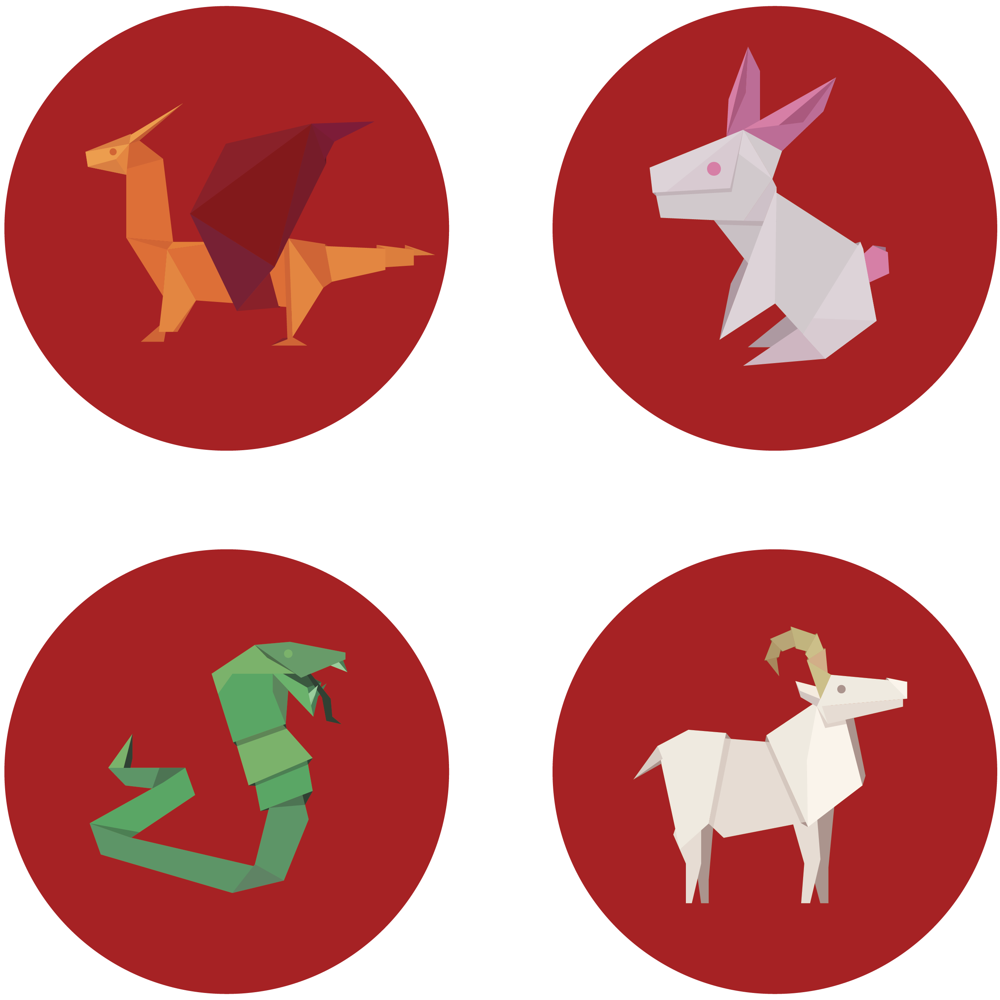
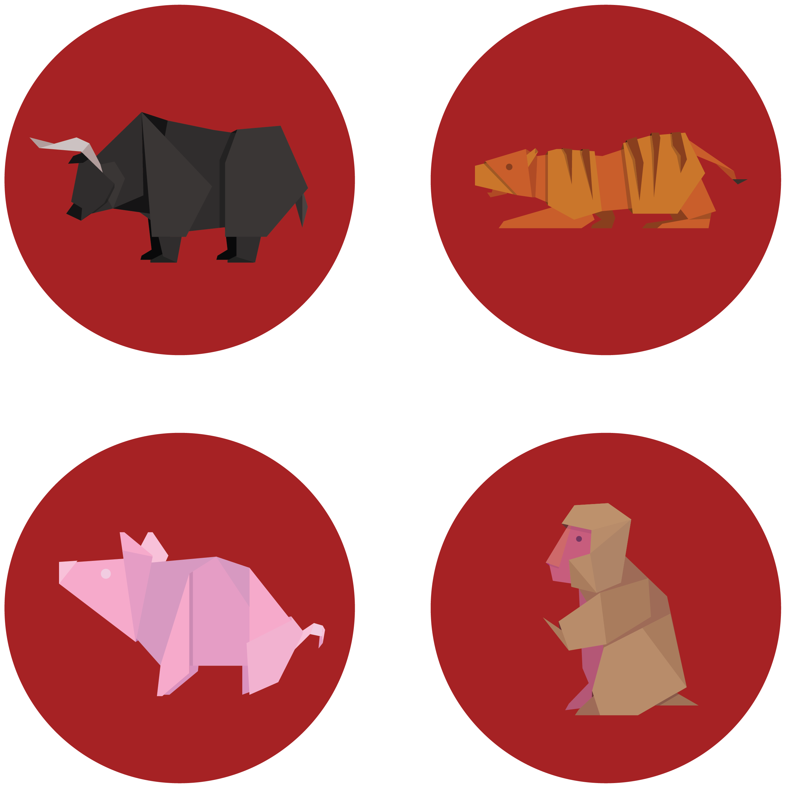
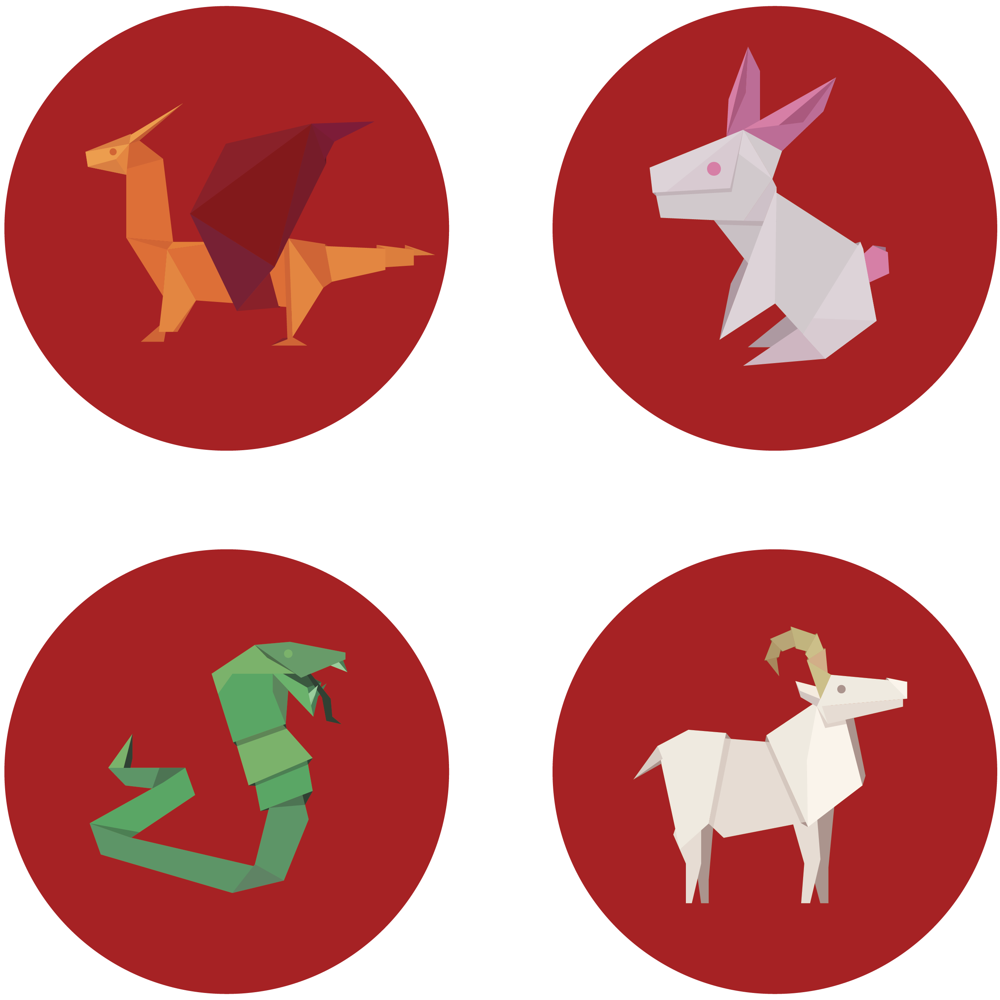
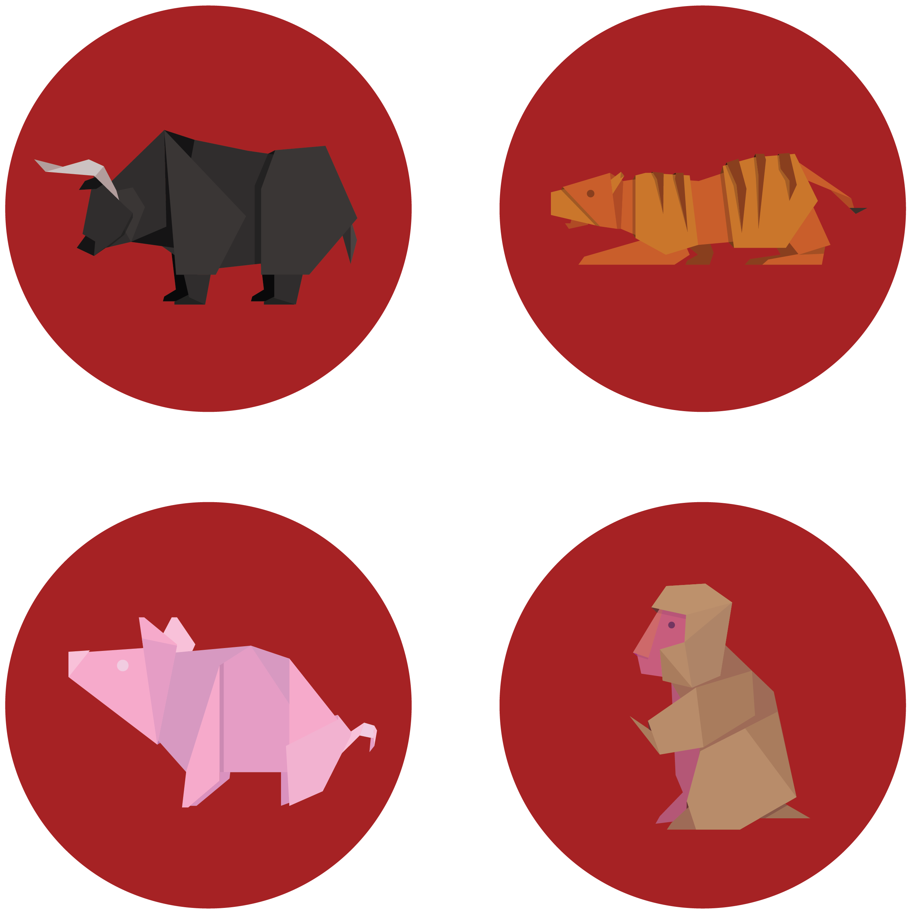

While interning at EF Education First, I created these stickers for the company's Lunar New Year celebration. Employees would go online to read about their Zodiac animal and receive this sticker upon completion. In terms of design, I aimed for an origami/paper aesthetic and pushed myself to achieve design consistency while creating unique animals. Overall, this was a fun, quick project that brought me back to my younger paper-folding days with my mother.